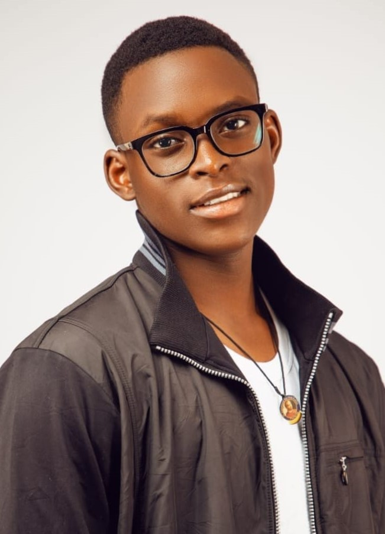

OKWE SAMSON ANAH
proffesion: Aspiring Software Developer
Location: Abuja, Nigeria
Email: okwesamson2@gmail.com
Phone: +2349032712572
course code: SEN108 lab
Matric: VUG/SEN/24/11218
Skills being learned
- Programming languages: JavaScript, Python, Java,dart,html
- Development frameworks: React, spring booth, flask, flutter
Secondary and primary school
-
Waec certified and graduate
Saints simon and jude, kuje, abuja
Duration: 2018-2024
Description: was a store prefect
-
primary certified
ST Aloysius pri school, garki, Abuja
Duration: 2014-2018
Description: graduated in good hands
Get in Touch
If you'd like to get in touch, please feel free to reach out to me on: